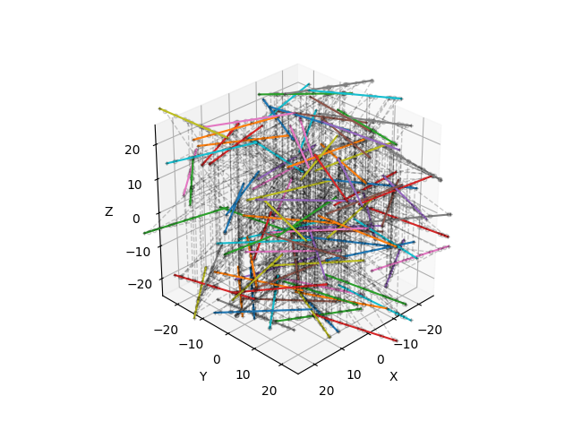

📐 Mesh
Mesh
{kind=link}
- class fibermat.mesh.Mesh(*args, **kwargs)
A class inherited from pandas.DataFrame to represent a mesh structure for a set of discontinuous fibers. It defines:
the beam elements (intra-fiber connections).
the constraint elements (inter-fiber connections).
Parameters
- netpandas.DataFrame, optional
Fiber network represented by a
Netobject.
Note
The constructor calls
init()method if the object is instantiated with parameters. Otherwise, initialization is performed with the pandas.DataFrame constructor.- Use:
>>> # Generate a set of fibers >>> mat = Mat(100) >>> # Build the fiber network >>> net = Net(mat) >>> # Create the fiber mesh >>> mesh = Mesh(net) >>> mesh fiber s x y z beam constraint 0 0 -12.500000 -1.176401 -3.074404 -24.338157 1 0 1 0 -11.222534 -0.806746 -1.851590 -24.338157 2 752 2 0 -10.466114 -0.587864 -1.127531 -24.338157 3 123 3 0 -10.009779 -0.455816 -0.690719 -24.338157 4 1519 4 0 -5.432013 0.868835 3.691203 -24.338157 5 706 ... ... ... ... ... ... ... ... 1729 99 6.159453 -21.379789 -8.424815 24.516947 1730 1094 1730 99 6.740970 -21.060169 -8.910618 24.516947 1731 157 1731 99 7.284437 -20.761462 -9.364634 24.516947 1732 1294 1732 99 11.270660 -18.570503 -12.694751 24.516947 1733 1585 1733 99 12.500000 -17.894817 -13.721749 24.516947 1716 1733 [1734 rows x 7 columns]
Data
- indexpandas.Index
Node label. Each label refers to a unique node.
- Node:
- fiberpandas.Series
Label of the fiber to which the node belongs
- spandas.Series
Node curvilinear abscissa along the fiber (mm).
- Node position:
- xpandas.Series
X-coordinate of the node (mm).
- ypandas.Series
Y-coordinate of the node (mm).
- zpandas.Series
Z-coordinate of the node (mm).
- Elements:
- constraintpandas.Series
Index of the connected node. It defines a constraint on the relative node positions.
- beampandas.Series
Index of the next node along the fiber. It defines a mechanical beam element.
Attributes
attrs:Global attributes of DataFrame.
Methods
- property attrs
- Global attributes of DataFrame:
- nint
Number of fibers. By default, it is empty (n = 0).
- sizefloat
Box dimensions (mm). By default, the domain is a 50 mm square cube.
- periodicbool
Boundary periodicity. By default, the domain is periodic.
- static check(mesh=None)
Check that a
Meshobject is defined correctly.This method is automatically called by functions that use a
Meshobject as input.Parameters
- meshpandas.DataFrame, optional
Fiber mesh represented by a
Meshobject.
Raises
- KeyError
If any keys are missing from the columns of
Meshobject.- AttributeError
If any attributes are missing from the dictionary
attrs.- IndexError
- If row indices are incorrectly defined:
Row indices are not unique in [0,…, m-1] where m is the number of nodes.
Node labels are not sorted.
- TypeError
If labels are not integers.
- ValueError
If fibers, beams or constraints are ill-defined, improperly connected or not sorted.
Returns
- meshpandas.DataFrame
Validated
Meshobject.
Example
import numpy as np
from matplotlib import pyplot as plt
from tqdm import tqdm
from fibermat import *
# Generate a set of fibers
mat = Mat(100)
# Build the fiber network
net = Net(mat, periodic=True)
# Create the fiber mesh
mesh = Mesh(net)
# Check data
Mesh.check(mesh) # or `mesh.check()`
# -> returns `mesh` if correct, otherwise it raises an error.
# Figure
fig, ax = plt.subplots(subplot_kw=dict(projection='3d', aspect='equal',
xlabel="X", ylabel="Y", zlabel="Z"))
ax.view_init(azim=45, elev=30, roll=0)
if len(mesh):
# Draw elements
for i, j, k in tqdm(zip(mesh.index, mesh.beam, mesh.constraint),
total=len(mesh)):
# Get element data
a, b, c = mesh.iloc[[i, j, k]][[*"xyz"]].values
if mesh.iloc[i].s < mesh.iloc[j].s:
# Draw intra-fiber connection
plt.plot(*np.c_[a, b],
c=plt.cm.tab10(mesh.fiber.iloc[i] % 10))
if mesh.iloc[i].z < mesh.iloc[k].z:
# Draw inter-fiber connection
plt.plot(*np.c_[a, c], '--ok',
lw=1, mfc='none', ms=3, alpha=0.2)
if mesh.iloc[i].fiber == mesh.iloc[k].fiber:
# Draw fiber end nodes
plt.plot(*np.c_[a, c], '+k', ms=3, alpha=0.2)
# Set drawing box dimensions
ax.set_xlim(-0.5 * mesh.attrs["size"], 0.5 * mesh.attrs["size"])
ax.set_ylim(-0.5 * mesh.attrs["size"], 0.5 * mesh.attrs["size"])
plt.show()